Educação e capacitação profissional
Turmas de dois meses em beleza, estética, artesanato, comunicação e negócios, sempre com certificado no fim e encaminhamento depois.
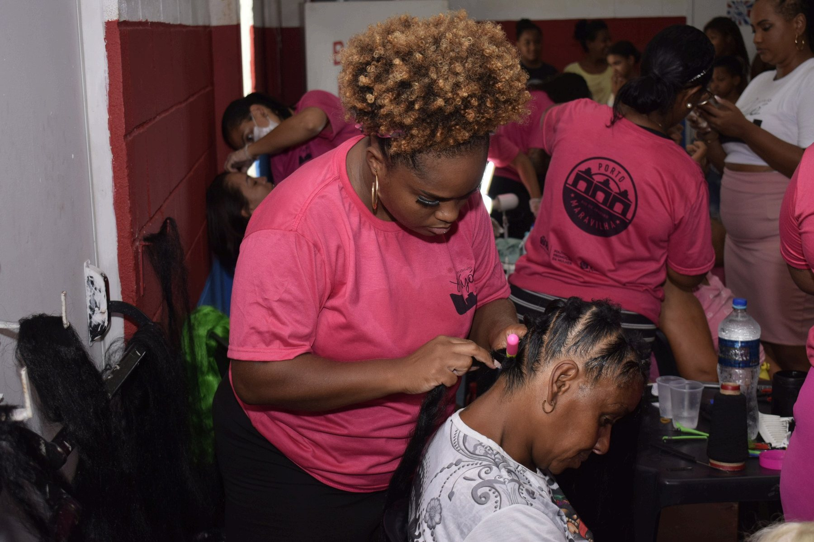
Desde 2021 o Instituto Ayó forma mulheres negras, jovens e adultos nos territórios do Morro da Providência, do Fallet e da Pequena África. A trança abriu a porta. O que entra depois é ofício, cultura, renda e uma história que muda de rumo.
Mulheres que acordavam cedo para cuidar da casa, dos filhos e dos netos, carregando talento e nenhuma oportunidade. Em 2021, numa sala cedida pela associação de moradores do Morro da Providência, a primeira favela do Brasil, começamos com um curso só e oito alunas. O estatuto da casa põe quatro frentes lado a lado, e a cultura é uma delas.
Turmas de dois meses em beleza, estética, artesanato, comunicação e negócios, sempre com certificado no fim e encaminhamento depois.
Precificação, formalização, atendimento e divulgação. A aluna aprende a cobrar pelo que faz antes de aprender a vender.
Trinta e duas horas de formação em identidade racial, com linguagem construída a partir do território. É disciplina do programa, não oficina avulsa.
Trança como patrimônio imaterial, contação de histórias, fotografia, ritmos e desfiles públicos no MUHCAB. Cultura aqui não é enfeite do projeto social.
O primeiro curso do Instituto foi extensão de cílios. Deu certo, e mostrou que ensinar uma técnica era importante e insuficiente. As alunas precisavam de acolhimento e de voltar a acreditar em si mesmas.
Foi quando as tranças chegaram que entendemos a missão. A trança afro é patrimônio cultural imaterial brasileiro, amparada na Constituição Federal e em reconhecimentos do IPHAN. Ela carrega história, preserva memória e conecta gerações. E é também um ofício que paga conta no fim do mês.
Por isso o curso abre pelo contexto histórico e cultural das tranças africanas, e só depois vai para a técnica.
Ver todos os cursos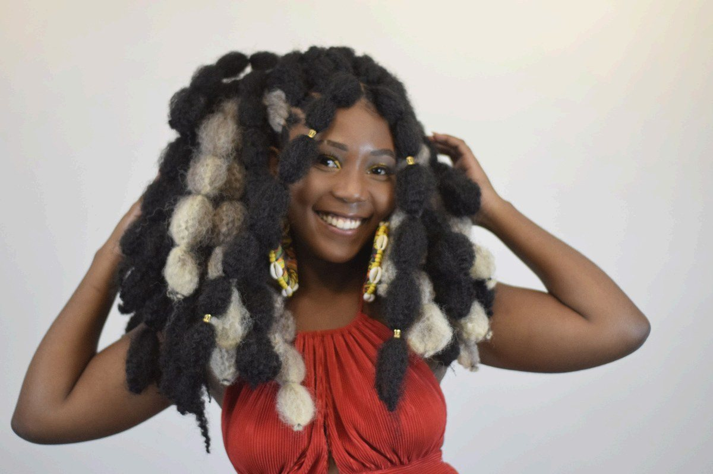
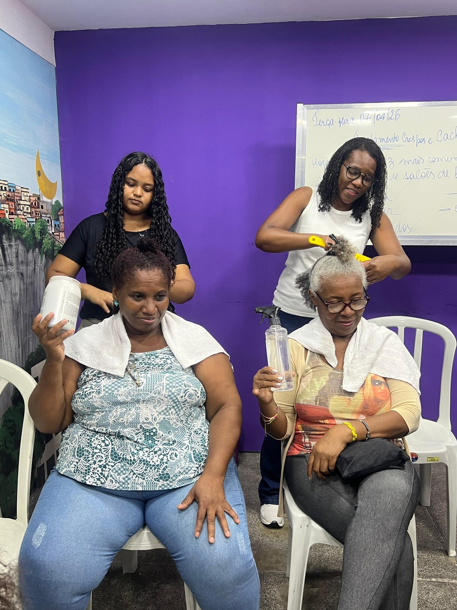
Qualificação técnica separada de cuidado, identidade e acesso real a oportunidade produz resultado curto. Foi a partir dessa constatação que o Instituto desenhou a própria metodologia, em cinco pilares que organizam todo o percurso da aluna.
Acolher, reconhecer, qualificar, conectar e sustentar. A formação técnica dura dois meses. O acompanhamento vai até completar doze.
Conhecer a Metodologia OdaraA sede fica na Rua Bento Ribeiro, na Gamboa, no Centro do Rio, no mesmo quarteirão da Sala da Mulher Cidadã da Gamboa, equipamento da Secretaria Especial de Políticas e Promoção da Mulher onde o Instituto trabalha. Daqui atendemos o Morro da Providência, o Fallet e o entorno da Pequena África, o território onde o porto recebeu a maior parte das pessoas escravizadas que chegaram ao Brasil. O encontro com a vizinhança acontece no Mercado Popular Leonel Brizola, na entrada do morro.
Desde 2026 o Instituto também atravessa a cidade. Tem turma de crochê na Rocinha e turma de ritmos na Tijuca.
Trabalhamos em rede com o MUHCAB, o CEAM, o NEAP Chiquinha Gonzaga, a Casa da Mulher Cidadã, a Associação Prover, a Gerando Falcões, o Sebrae RJ, a PUC-Rio e o CRAI, que nos traz mulheres migrantes e refugiadas para as turmas gratuitas.
Ver o nosso impacto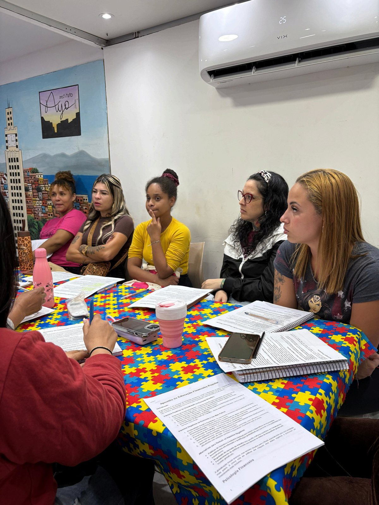
Pequena ÁfricaDois deles nasceram de edital público. Todos acontecem na Gamboa, na Providência ou nos equipamentos culturais da Pequena África.
A vida de uma mulher, transformada, transforma gerações.
Moção de Reconhecimento e Aplausos · Câmara Municipal do Rio de Janeiro · 26 de maio de 2026
A moção foi concedida a Adriana Pinto de Siqueira, presidente do Instituto Ayó, por proposição da vereadora Joyce Trindade.
Conhecer a história do Instituto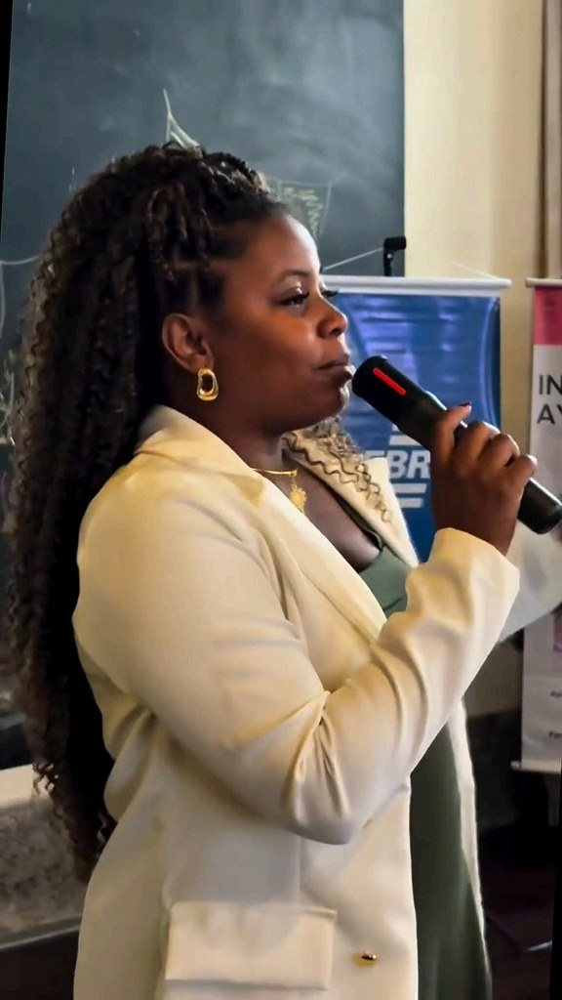
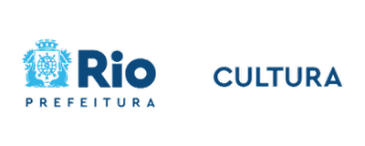
Secretaria Municipal de Cultura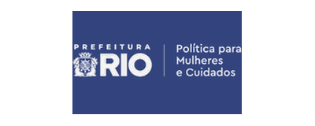
Política para Mulheres e Cuidados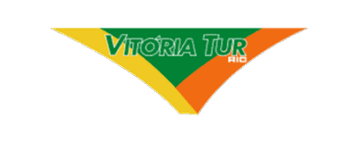
Vitória Tur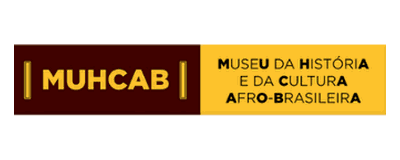
MUHCAB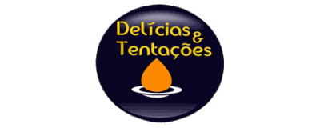
Delícias e Tentações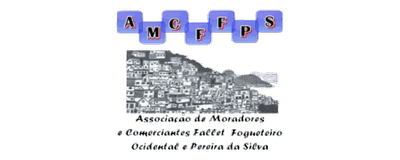
AMCFFPSCaminham com a gente também o CEAM, o NEAP Chiquinha Gonzaga, a Associação Prover, a Gerando Falcões, o Sebrae RJ, a PUC-Rio, o CRAI, o Sim, Eu Sou do Meio e a Casa Amarela Providência.
As turmas são gratuitas e abrem ao longo do ano. Fale com a gente pelo WhatsApp ou deixe seu nome na lista de espera.
Falar com o Instituto